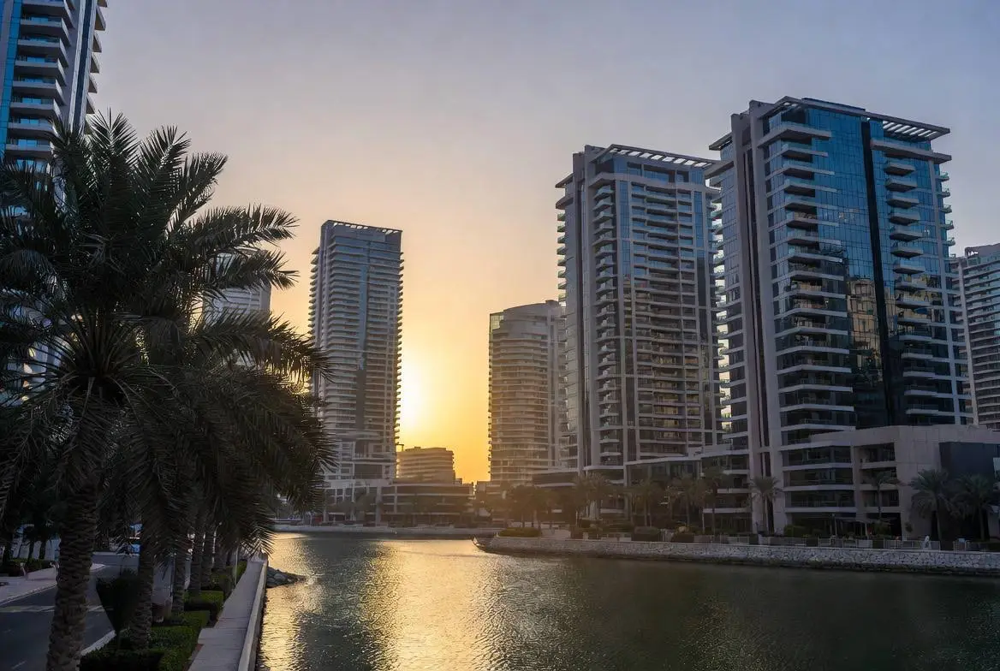

WATERFRONT LIVING • DINING • NIGHTLIFE
Dubai Marina is one of Dubai's most recognizable waterfront districts, known for luxury residences, restaurants, nightlife, hotels and spectacular marina views.
Dubai Marina is a master-planned waterfront community built around a man-made marina canal. It combines luxury residential towers, hotels, retail destinations, restaurants and entertainment venues into one of Dubai's most vibrant districts.
Dubai Marina continues to attract residents and visitors because of its unique combination of waterfront living, walkability and lifestyle amenities.
Dubai Marina offers some of Dubai's most popular luxury and business hotels.
Related Guide: Best Hotels In Dubai 2026
The district offers waterfront dining, international cuisine, rooftop venues and casual cafes overlooking the marina.
Related Guide: Best Restaurants In Dubai 2026
Dubai Marina remains one of the city's most active nightlife districts, featuring rooftop lounges, hotel bars, beach clubs and waterfront venues.
Related Guide: Dubai Nightlife Guide
Residents enjoy modern apartments, walkable streets, public transportation access and close proximity to Dubai's major business districts.
The area remains particularly popular among professionals, entrepreneurs and international residents.
Related Guide: Best Areas To Live In Dubai
Dubai Marina continues to be one of Dubai's strongest residential investment districts due to its international appeal, strong rental demand and waterfront location.
Related Guide: Buy Property In Dubai
Related Guide: Top Attractions In Dubai 2026
Dubai Marina remains one of the city's most complete lifestyle destinations. Whether visiting for tourism, considering relocation or researching investment opportunities, the district offers a combination of waterfront living, hospitality, dining and entertainment that few urban areas can match.